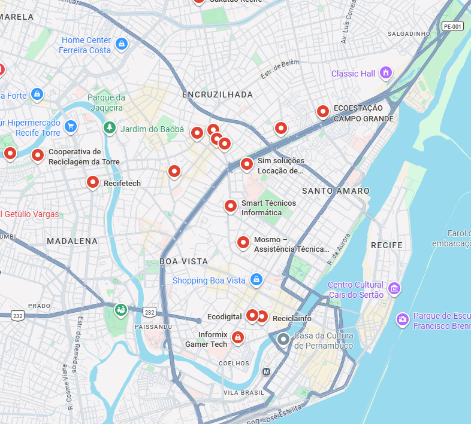

📍 Onde Descartar
Encontre pontos de coleta próximos para lixo eletrônico com segurança.
Buscar locaisReciclagem inteligente de eletrônicos para um futuro sustentável

Encontre pontos de coleta próximos para lixo eletrônico com segurança.
Buscar locaisAprenda a separar corretamente baterias, cabos e aparelhos antigos.
Ver guiaDescubra como reaproveitar ou doar dispositivos ainda funcionais.
ExplorarVeja como o descarte correto ajuda o planeta e reduz poluição.
Saiba mais